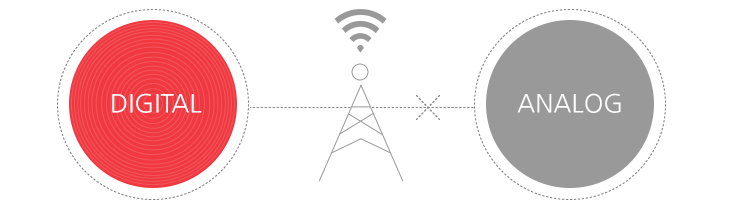

방송 기술 일반
- 디지털전환이란
- 현재 지상파 방송사는 아날로그 TV 수상기를 가진 시청자와 디지털 TV 수상기를 가진 시청자 모두가 TV 시청이 가능하도록 두 가지 방식 모두의 방송 신호를 송출하고 있다. 즉, 동일한 방송 내용의 송출을 위해 한정된 자원인 주파수를 아날로그, 디지털 두 방식으로 쓰고 있으므로 산술적으로 2배의 주파수를 사용하고 있다.

디지털 전환이란 장기적으로는 디지털로만 방송을 송출하고, 아날로그는 방송을 중지하는 것을 말한다. 아날로그 방송을 중지함으로써 생기는 여유 주파수 중의 대부분은 전파 음영지역을 해소하는 데 사용하여, 대한민국 국민 모두가 무료로 지상파 TV를 볼 수 있게 될 것이다. 지상파 방송이 가입자 기반의 서비스가 아니기 때문에 어려운 점이 많겠지만, 디지털 전환은 지상파 방송의 무료 보편성을 위해서 반드시 성공해야 할 모두의 과제이다. 이를 위해 방송사, 정책기관, 가전사, 시청자가 서로 돕고 협조해야만 성공적인 전환이 가능할 것이다.